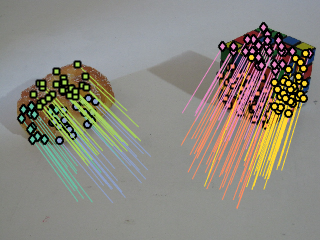

This code run Multi-class Cascaded T-linkage on a sample instance of the Adelaide Cube HF dataset. It is aimed atthe simultaneous estimation of fundamental matrices and homographies from sparse stereo-correspondences.
Contents
load data
- y is a 6xN matrix, stores the correspondence in image coords per columns. A correspondence between the first and second image (x,y,1)<-->(x',y',1) is represented in cartesian coordinates stacked by column: [x;y;1; x';y';1];
- X is a 6xN matrix, stores the correspondence in normalized coords per columns. G is a labeling vector.
%rng(0); % for debug sequencename = 'breadcube_FH'; load(sequencename); % show input data figure; display_correspondences(y,G,img2); hold on; scatter(y(4,G==0), y(5,G==0),'xk');

Figure shows the input data, outliers are marked with black corsses
fit fundamental matrix
fit the more general model, in this case represented by fundamental matrix (other models availbale are cirlce, line,line from circle, parabola, homography, affine fundamental)
% Sampling parameters opts1.epsi = 0.035; % inlier threshold opts1.model = 'fundamental'; % model type opts1.sampling ='localized'; % ( 'uniform' or 'localized' or 'neigh' ) opts1.m = 3000; % number of sampled hyphotesis opts1.geo =1; opts1.robust = 'x84'; opts1.voting = "gaussx84"; % voting function (try also 'gauss' to limit the influence of the inlier threhsold) % Hyphoteses sampling Y1 = sampler_homof(X,opts1); % T-Linkage clustering C1 = tlnkg(Y1.P); % Outlier rejection C1 = prune_unstable_points( X,C1, @recover_fundamental, @res_fm, 7, opts1.epsi); % outlier rejection based on NFA is also possible %kappa = 50; %C1 = prune_nfa(X,C1, @recover_fundamental, @res_fm, 8, opts1.epsi, kappa ); M1 = recover_fundamental(X,C1); figure; display_correspondences(y,C1,img2);
Figure shows the structures related to fundamental matrix models
fit nested models
opts2.epsi = 0.01; opts2.model = 'homography_from_fund'; opts2.sampling ='localized'; opts2.geo =1; opts2.m = 500; opts2.robust = 'off'; opts2.voting = 'gaussx84'; C2 = cascaded_tlnkg_fund(X, C1,M1, opts2); C2 = prune_unstable_points( X,C2, @recover_homography, @res_homography, 4, opts2.epsi); %C2 = prune_nfa(X,C2, @recover_homography, @res_homography, 4, opts2.epsi, kappa ); M2 = recover_homography(X, C2); C2 = stabilize_homo_segmentation(X,C1,C2,M2); figure; display_correspondences(y,C2,img2); title('Inlier of the nested structures');
Figure displays structures related to homgraphies compatible with the previous attained fundamental matrices.
model selection
The main idea is that models belonging to different classes compete with each other only if they explain the same points and are geometrically compatible. In this way, all the intra-class model selection problems are implicitly dealt by T-linkage, whereas the inter-class model selection issues take explicitly the form of one-vs-many or one-vs-one model comparison. Here GRIC is used to compare a fundamental matrix against one or more homographies.
In the GRIC score relates to goodness of fit, relates to model complexity.
lambda1 = 1; lambda2 = 2.5; Mu = M1; Mv = M2; Cu = C1; Cv = C2; num_u = size(Mu,2); num_v = size(Mv,2); T = zeros(num_u,num_v); for i =1:num_u for j = 1:num_v % if the i-th U and the j-th V have non empty intersection % (in this case the compatibility is enforced by construction, % otherwise it should be enforced here). if(sum((Cu == i).*(Cv == j))>=1) T(i,j) = 1; end end end flg_u = true(1,max(Cu)); flg_v = true(1,max(Cv)); [~,resi_fm,~] = recover_fundamental(X,C1); [~,resi_h,~] = recover_homography(X,C2); sigma_fm = max(resi_fm); sigma_h = max(resi_fm); for i = 1:size(T,1) res_u = res_fm(X(:,Cu==i), Mu(:,i)); cost_u = compute_gric(res_u.^2,sigma_fm,lambda1, lambda2, 'fundamental'); if(sum(T(i,:))>0) res_v = inf*ones(size(res_u)); tail = 1; for j= 1:size(T,2) if(T(i,j)==1) nv = sum(Cv==j); res_v(tail: tail+nv-1) = res_homography(X(:,Cv==j),Mv(:,j)); tail = tail+nv; end end Jv = sum(res_v.^2); heta = sum(T(i,:)); cost_v = compute_gric(res_v.^2,sigma_h,lambda1, lambda2, 'homography',heta); if(cost_u < cost_v) flg_v(T(i,:)==1)= false; else flg_u(i)= false; end end end % update labeling cont = 1; F = zeros(size(G)); for i = 1:numel(flg_u) if(flg_u(i)) F(Cu==i)=cont; cont = cont+1; end end for i = 1:numel(flg_v) if(flg_v(i)) F(Cv==i)=cont; cont = cont+1; end end
result
[miss , fnr, acc, gtgamma] = compute_me(F,G);
fprintf('miss error %f \n',100*miss);
figure;
display_correspondences(y,F,img2);
miss error 4.291845
Final segmentation with Fundamental matrix structure and homography structure on the cube face.